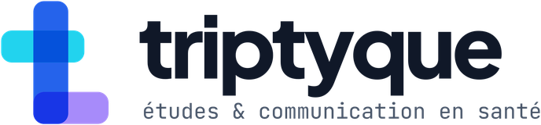

Stage de Manon · Triptyque recherche & conseil
Plan de travail des premières semaines
Quatre semaines pour terminer la phase de cadrage et lancer la recherche utilisateur. Chaque semaine a un objectif, des tâches avec une durée indicative et un livrable. Placez les tâches sur vos jours de présence ; nous ajustons au point hebdomadaire.
Le cap
Ce que nous construisons
Un module pilote d’un parcours de formation en trois niveaux, sur un sujet de santé publique, conçu avec les méthodes de l’UX, justifié par la psychologie cognitive, et testé auprès d’utilisateurs.
Module pilote : la santé mentale des étudiants, pour un public d’enseignants du supérieur. Le niveau 2 « Repérer la souffrance » est conçu en entier avec l’entrée dans le parcours et le choix du niveau. Les niveaux 1 « Connaissances de base » et 3 « Accompagner et agir » prennent la forme de modules témoins, reliés par un fil rouge : la situation fictive d’un étudiant, vue depuis la place de l’enseignant, traitée avec un guidage qui diminue.
Avant chaque tâche
Est-ce que cela m’aide à concevoir ou à tester le module pilote ?
Si oui, allez-y. Si non, notez l’idée dans la rubrique « En attente » du document de suivi. Si vous hésitez, demandez avant de vous lancer.
Lire pour décider
- Chaque lecture répond à l’une des cinq questions de la revue. Sinon, elle attend.
- Une lecture se termine par une ligne dans le tableur et une phrase : « ce que cela change pour le module ».
- Pas plus de la moitié de la semaine en lecture. L’autre moitié produit quelque chose : un tableau, un croquis, un texte.
Pas maintenant
- Écrire des articles de vulgarisation
- Explorer des thématiques qui ne servent pas le module pilote
- Chercher une bibliographie exhaustive
- Choisir l’outil définitif avant la note de cadrage
La routine de chaque journée
Vingt-cinq minutes par jour pour que tout soit consigné au même endroit.
En début de journée · 10 min
- Dupliquez l’entrée du jour dans le document de suivi et datez-la.
- Écrivez deux ou trois tâches, prises dans le plan de la semaine.
- Pour chacune, notez le livrable qu’elle fait avancer.
En fin de journée · 15 min
- Remplissez « Ce qui a avancé » et le statut des tâches.
- Reportez les lectures dans le tableur.
- Notez les questions pour le tuteur avec #tuteur, et les usages de l’IA.
- Mettez à jour le registre des heures dans le carnet.
Pour le point hebdomadaire, préparez trois réponses : ce que j’ai produit, la décision dont j’ai besoin, ce qui me bloque.
Semaine par semaine
La phase de cadrage compte 35 heures, dont une partie a été faite la première semaine. Les durées sont indicatives et s’ajustent aux jours de présence.
Semaine 2 · 16 au 20 novembre
Voir ce que nous construisons
10 h
Mardi 17 novembre Séminaire
| Tâche | Durée | Sert à |
|---|---|---|
| Croquis du parcours, version 0 : l’entrée et le choix du niveau, le module de niveau 2, et une activité pour chacun des niveaux 1 et 3 sur la même situation d’étudiant. Sur papier ou en maquette simple. | 2 h | Ancrer le travail sur un objet visible |
| Lectures pour la question 1 : Carpenter et al. (2022), van Gaalen et al. (2021), Thomann et Deutscher (2025). Une ligne chacune dans le tableur. | 3 h | Cartographie des méthodes |
| Cartographie des méthodes innovantes, version 1 : un tableau de 6 à 8 méthodes, avec pour chacune le mécanisme cognitif et le niveau de preuve. | 2 h | Note de cadrage |
| van Merriënboer et al. (2025), chapitres 2, 3 et 6. Une idée de progression à reporter sur le croquis. | 2 h | Architecture des niveaux |
| Point hebdomadaire et premier bilan de quinzaine. | 1 h | Ajuster le plan |
Livrable du vendredi 20 novembre
Le croquis version 0 et la cartographie version 1. C’est fini quand le croquis montre les trois niveaux et que chaque méthode du tableau a une source.
Semaine 3 · 23 au 27 novembre
Décider avec quoi construire
9,5 h
| Tâche | Durée | Sert à |
|---|---|---|
| Lectures pour la question 5 : Sweller et al. (2019), Chen et al. (2017), Fortin et Rousseau (2012) chapitre 10, Habib et al. (2018) chapitre 9. | 3 h | Modèle cognitif |
| Modèle cognitif de l’apprenant, version 1 : une page, les trois axes et une hypothèse de conception par axe. | 1 h | Note de cadrage |
| Lectures pour les questions 3 et 4 : Floor (2023) chapitre 5, Lu et al. (2022). | 2 h | Choix du prototype |
| Grille de comparaison des outils de prototypage : 4 ou 5 outils, selon les 5 critères du guide d’accueil. | 2 h | Choix de l’outil |
| Croquis version 1 : y placer les 2 ou 3 méthodes retenues à titre provisoire. | 1 h | Module pilote |
| Point hebdomadaire. | 0,5 h | Ajuster le plan |
Livrable du vendredi 27 novembre
Le modèle cognitif version 1, la grille des outils et le croquis version 1. C’est fini quand chaque méthode retenue sur le croquis est reliée à un axe du modèle cognitif.
Semaine 4 · 30 novembre au 4 décembre
Rédiger la note de cadrage
7,5 h
| Tâche | Durée | Sert à |
|---|---|---|
| Note de cadrage, version 1 : publics, objectifs, contraintes, modèle cognitif, 2 ou 3 méthodes retenues, situation fil rouge, démarche, type de prototype, limites. Quatre pages au plus. | 5 h | Livrable de la phase 1 |
| Liste des questions encore ouvertes, et de ce qui reste à vérifier. | 0,5 h | Note de cadrage |
| Préparation de la phase 2 : profils d’enseignants à recruter (novices et déjà sensibilisés, disciplines variées) et moyens de les joindre. | 1 h | Recherche utilisateur |
| Deuxième bilan de quinzaine et validation de la note. | 1 h | Passage en phase 2 |
Livrable du vendredi 4 décembre
La note de cadrage, version 1, soumise à validation. C’est fini quand une personne extérieure comprend, en la lisant, ce que sera le module pilote et pourquoi.
Semaine 5 · 7 au 11 décembre · phase 2
Préparer la recherche utilisateur
10 h
| Tâche | Durée | Sert à |
|---|---|---|
| Guide d’entretien avec des enseignants : situations déjà rencontrées avec des étudiants, ce qu’ils savent et ce qu’ils pensent être leur rôle, contraintes de temps, habitudes de formation. | 3 h | Entretiens |
| Jeu de cartes pour le tri ouvert : 20 à 30 notions du niveau 1 (stress, souffrance, trouble, signe d’alerte, services de santé étudiante…), à partir du dossier de contenu. | 2 h | Axe 1 |
| Choix de l’outil de tri de cartes en ligne. | 1 h | Tri de cartes |
| Note d’information et formulaire de consentement, avec le tuteur : annonce du sujet, droit de s’arrêter, ressources d’aide (3114, services de l’établissement), aucune question sur la santé mentale des participants. | 2 h | Cadre éthique |
| Premiers contacts de recrutement auprès d’enseignants. | 2 h | Entretiens et tri |
Livrable du vendredi 11 décembre
Le guide d’entretien, le jeu de cartes, les documents d’information et de consentement, et deux premiers enseignants contactés.